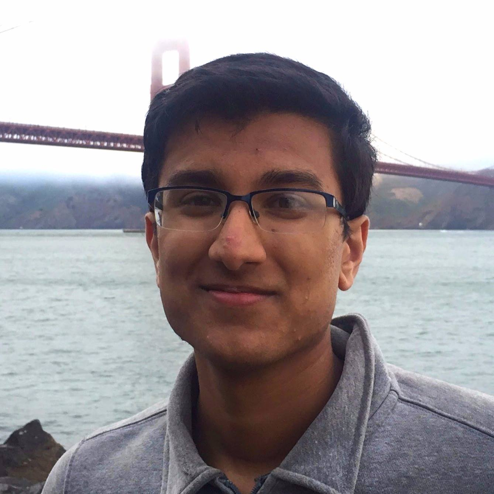
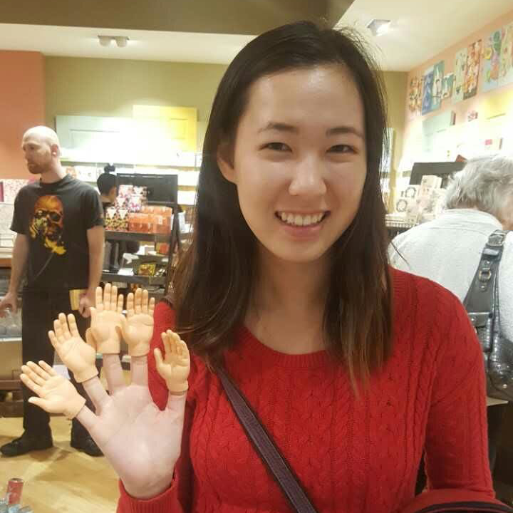
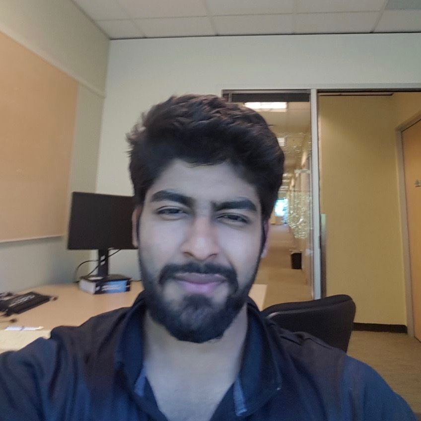
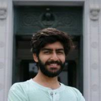
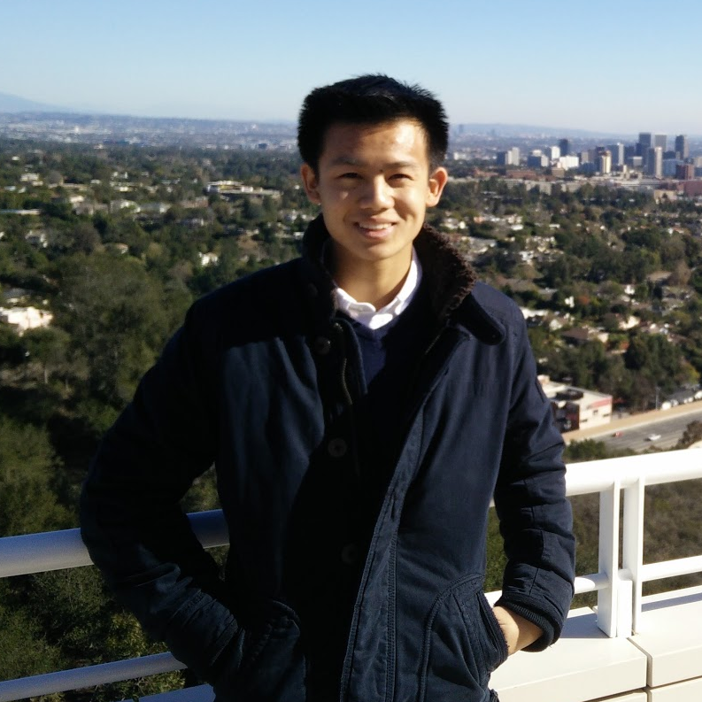
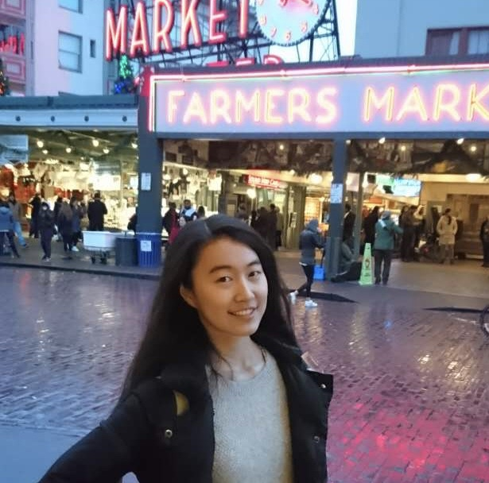
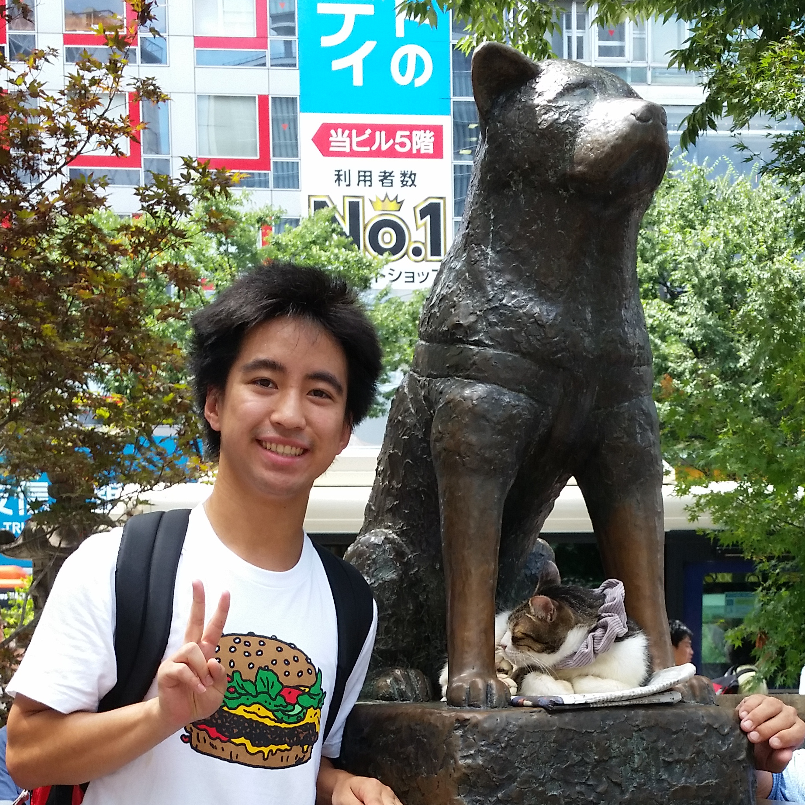
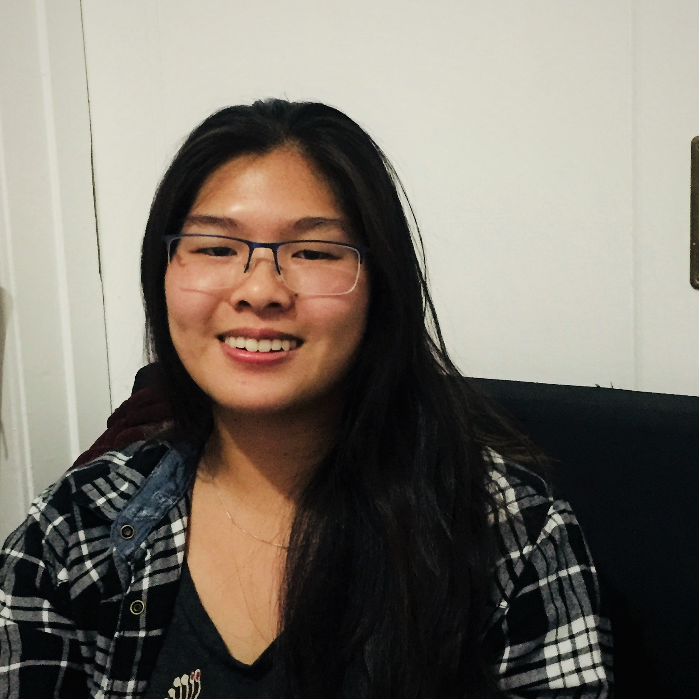
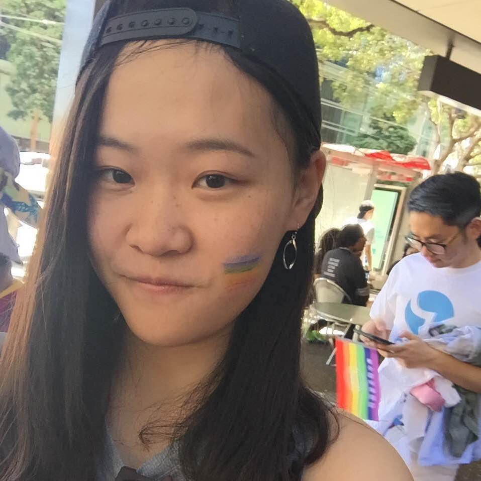
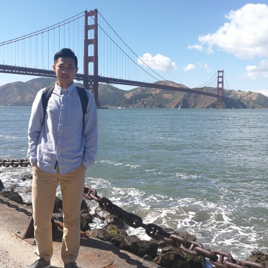

All Office Hours are held at 201B Chavez.
Instructor
Hank Ibser
hankibser AT berkeley DOT edu
As a math undergrad at Cal, I discovered probability through the class you are taking, then in grad school my interests gradually shifted from probability to statistics. I got my PhD in Statistics, also from Cal, in 2002, and I've been a lecturer here since then. In addition to teaching (which I love) I do consulting work in areas as varied as geothermal power and health care regulation. When I'm not doing anything statistical, I enjoy playing music (alto saxophone and bass), Dungeons and Dragons, and with my kids (age 7 and 9). I was captain of the Cal Men's Ultimate Frisbee team from 1996-1998 and coached the Cal Women's Ultimate Frisbee team from 2004-2007.
OH:
- M 1-3 pm
- W 10-12 pm
Head uGSIs
malayandi AT berkeley DOT edu
Hey there, I'm a fourth-year studing Mathematics and Computer Science. I am broadly interested in artificial intelligence (AI) and teaching (surprise, surprise). My non-academic interests include European football, international cinema, and Indian music.
Section:
- MW 1-2 pm @ 340 Evans (Section 102)
- MW 4-5 pm @ 334 Evans (Section 107)
OH:
- M 10-11 am
- Tu 2-4 pm
- F 1-2 pm

dibya AT berkeley DOT edu
Hey, I'm Dibya (pronounced "dibbo")! I'm a third-year studying Computer Science, Statistics, and Mathematics: my interests are in statistical learning and machine learning theory. Study aside, I love binge watching TV, I'm enamored with boba and Thai food, and I absolutely love teaching!
Section:
- MW 2-3 pm @ 340 Evans (Section 112)
- MW 4-5 pm @ 332 Evans (Section 108)
OH:
- M 11-12 pm
- Tu 11-12 pm
- W 1-2 pm
- Th 11-12 pm
uGSIs

biyonkaliang AT berkeley DOT edu
Hi! I'm Biyonka, a third-year Statistics major w/ a Mathematics concentration. Academically, I'm interested in mathematical modeling and machine learning, especially their applications to public health and medicine. In my free time, I enjoy reading, playing piano and destroying my opponents in Overwatch.
Section:
- MW 3-4 pm @ 332 Evans (Section 106)
OH:
- Tu 1-2 pm
- F 2-3 pm

Brian Thorsen
brianthorsen AT berkeley DOT edu
Hi everyone! I'm a third year Statistics major, originally from Los Angeles. Beyond statistics, my academic interests include ecology and sustainability, and the democratization of scientific research. In my spare time, I enjoy working on music and fantasizing about a job on a cooking show.
Section:
- MW 3-4 pm @ 334 Evans (Section 105)
OH:
- Tu 11-1 pm

Dhrushil Badani
badanidhrushil AT berkeley DOT edu
I'm Dhrushil, a senior-year Computer Science major from Mumbai. I enjoy reading about history & politics, and spend a lion's share of my spare time indulging in South Asian film, music & poetry. I hope to maximize your probability of enjoying probability this semester.
Section:
- MW 6-7 pm @ 334 Evans (Section 111)
OH:
- M 4-5 pm
- T 1-2 pm

Dhruvil Badani
dhruvilb AT berkeley DOT edu
Hey, I'm Dhruvil, a senior in Computer Science. Love trance music, crime film and a bunch of other things. Looking forward to a great semester with y'all!
Section:
- MW 5-6 pm @ 332 Evans (Section 110)
OH:
- W 1-3 pm

zhang.j AT berkeley DOT edu
3rd year/CS + Stat/Pleasanton, CA
https://xkcd.com/552/
https://xkcd.com/552/
Section:
- MW 1-2 pm @ 334 Evans (Section 101)
OH:
- Tu 2-4 pm

Jessica Gao
jessica_gao AT berkeley DOT edu
I'm Jessica, a senior studying Statistics and Business. I like running, watching movies and TV shows, and going karaoke with friends. I hope you will have fun with probability this semester :)
Section:
- MW 5-6 pm @ 334 Evans (Section 109)
OH:
- F 10-11 am, 2-3 pm

Kazu Kogachi
kkogachi AT berkeley DOT edu
Hi I am Kazu,
I like probability
I dislike the cold
I like probability
I dislike the cold
Section:
- MW 2-3 pm @ 332 Evans (Section 104)
OH:
- M 11-12 pm, 3-4 pm
Maxwell Weinstein
maxwelljweinstein AT berkeley DOT edu
I am a Junior from the Bay Area, studying Math and Statistics. My academic interests are in Bayesian Statistics, Machine Learning, and Sports Analytics. In my free time, I like to make music with friends or write parody yelp reviews.
Section:
- MW 2-3 pm @ 334 Evans (Section 103)
OH:
- W 3-5 pm
Tutors

Catherine Wang
catherine_wang AT berkeley DOT edu
Hello! I'm Catherine, and I'm a second year studying Statistics and Computer Science. I'm from Santa Barbara, California, and in my free time, I enjoy playing piano, binge watching Netflix, and playing video games.
Section:
- M 2-3 pm @ 332 Evans (Section 112, with Dibya)
- W 2-3 pm @ 332 Evans (Setion 104, with Kazu)

Srinath Goli
srig AT berkeley DOT edu
Hi! I’m Srinath, a second year EECS major from the Bay Area. I enjoy playing poker, chess, board games, and eating at new restaurants. My favorite games are Catan, Coup, Carcassonne, and Dominion - let me know if you have any recommendations!
Section:
- M 1-2 pm @ 340 Evans (Section 102, with Andy)
- M 4-5 pm @ 334 Evans (Section 107, with Andy)

Xinyi Ren
xinyiren AT berkeley DOT edu
Hey! I am Xinyi, a Sophomore in Computer Science. I'm interested in machine learning especially deep learning and its use in computer vision and health industry. In my free time, I love talking, talking and talking so come and talk to me whenever you want.
Section:
- M 3-4 pm @ 332 Evans (Section 106, with Biyonka)
- M 5-6 pm @ 334 Evans (Setion 109, with Jessica)

Ziyang Zhou
zhou_ziyang AT berkeley DOT edu
Hi. I’m Ziyang. I’m a senior studying Mathematics, Economics, and Statistics. My interests lie in the realm of application of statistical methods to healthcare. In my spare time, I enjoy reading biography, and playing basketball.
Section:
- M 5-6 pm @ 332 Evans (Section 110, with Dhruvil)
- M 6-7 pm @ 334 Evans (Setion 111, with Dhrushil)